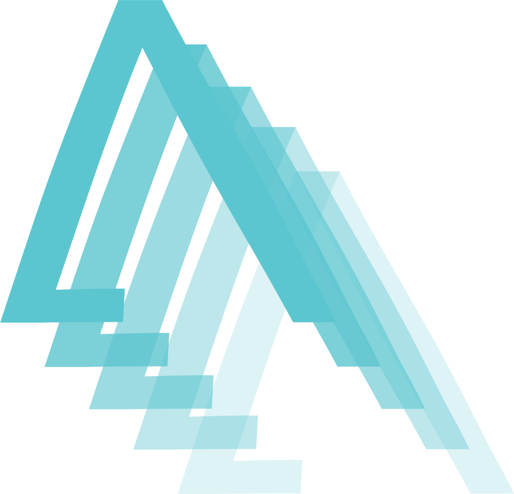
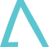

Verificabilidade limitada
Resultados não são facilmente auditáveis ou validados fora da plataforma.
Academy
Infraestrutura educacional on-chain


Plataforma institucional para investidores e parceiros
A Academy é uma plataforma de aprendizagem on-chain com Proof-of-Knowledge, certificações digitais e recompensas programáveis para alunos, criadores e comunidades.
O problema
Hoje, muitas plataformas medem tempo de tela e conclusão, mas não estruturam dados que provem o que foi realmente aprendido. Certificados ficam isolados, reputação é difícil de portar e registros dependem de sistemas centralizados.
Resultados não são facilmente auditáveis ou validados fora da plataforma.
Credenciais podem ser falsificadas ou não acompanharem o aluno.
Histórico educacional não circula entre comunidades e ecossistemas.
Recompensas e benefícios são geridos por sistemas internos, sem transparência.
A solução Academy
A Academy combina uma experiência educacional moderna com uma camada de validação on-chain. A velocidade do conteúdo permanece fluida, enquanto eventos relevantes podem gerar registros verificáveis, incentivos e certificações.
Aulas curtas, micro-quizzes e jornadas progressivas com recomendações inteligentes.
Ações educacionais válidas geram evidências verificáveis de progresso e conhecimento.
Atividades qualificadas podem gerar $Neurons conforme regras de emissão e orçamento.
Credenciais soulbound ligadas à identidade digital do aluno.
O token habilita participação, benefícios, delegação e voto em decisões do ecossistema.
Performance off-chain com registros on-chain onde há valor de verificação.
Como funciona
O aluno conecta carteira e realiza um diagnóstico inicial.
Acesso a aulas curtas, resumos e materiais complementares.
Quizzes e atividades geram evidência do conhecimento adquirido.
XP, badges e $Neurons conforme regras da plataforma.
Participação em lives, fóruns e comunidades especializadas.
Conclusão gera credencial verificável e soulbound.
Histórico habilita novos cursos, benefícios e governança.
Diferenciais
Eventos de aprendizagem são estruturados como dados que podem ser auditados e reaproveitados por outras aplicações.
Off-chain para performance e on-chain para registros de valor, sem comprometer escalabilidade.
$Neurons conecta recompensas, pagamentos, descontos e governança num único ecossistema.
Credenciais soulbound reduzem uso indevido e mantêm a autenticidade da reputação.
Planejada para expansão entre redes com controle global de suprimento.
Cursos, recompensas, armazenamento e certificação evoluem como módulos independentes.
Controle de acesso, EIP-712, pausas, proteção contra reentrância e limites de emissão.
Proof-of-Knowledge
O mecanismo converte ações educacionais elegíveis em recompensas dentro de políticas que respeitam limites diários, budgets de época e critérios de qualidade.
Participação, consistência, dificuldade, conclusão e validade das respostas.
Limites por aluno, cooldowns, budget por época e emissão decrescente.
Assinaturas verificáveis, validação de claims e mecanismos anti-sybil.
O papel do token $Neurons
$Neurons conecta aprendizagem, pagamentos, benefícios e participação no desenvolvimento do ecossistema. Ele existe para suportar utilidade real, não como promessa de valorização.
$Neurons são emitidos por quizzes, jornadas e certificações.
Usado para acesso a conteúdo, compras de cursos e benefícios em comunidades.
Delegação de voto e benefícios em decisões do ecossistema.
Tokenomics
Suprimento máximo de 10 milhões de $Neurons, com parâmetros finos para apoiar recompensas, governança e operação.
Parâmetros sujeitos a ajustes antes do lançamento definitivo, com foco em sustentabilidade e governança responsável.
Arquitetura tecnológica
Dados de curso e experiência permanecem otimizados off-chain, enquanto eventos críticos e credenciais são registrados em componentes on-chain seguros e auditáveis.
Tecnologia e stack
Segurança e confiabilidade
Funções, pausas e validação de assinaturas garantem operação segura.
Reentrância, rate limiting, integridade SHA-256 e processamento idempotente.
Testes, Slither, Solhint, Semgrep e auditoria externa previstos antes de produção.
Mercado e aplicações
Modelo de negócio
Conteúdos e experiências com valor agregado.
Integração de criadores e parceiros na plataforma.
Soluções white-label para corporações e instituições.
Assinaturas e acesso exclusivo baseado em reputação.
Estado atual do produto
A Academy já possui arquitetura documentada, fronteiras on-chain/off-chain definidas, persistência abstraída e fluxos responsivos de desenvolvimento. O protótipo navegável serve como base para validação de produto e maturidade técnica.
Roadmap
Jornada do aluno, administração de cursos, quizzes, progresso e persistência.
Token $Neurons, KnowledgeMinter, PaymentGateway, CertificateSBT e integração de carteira.
Deploy em testnet, auditoria, monitoramento, relayer, KMS e anti-sybil.
Marketplace, governança, comunidades premium, white-label e multi-chain.
Visão de longo prazo
A Academy busca tornar o histórico educacional mais verificável, portátil e útil. Com o tempo, um aluno poderá converter histórico, avaliações e participação em uma identidade de conhecimento que desbloqueia novas oportunidades e responsabilidades.
Conheça o protótipo de desenvolvimento da Academy e acompanhe a evolução de uma plataforma criada para conectar aprendizagem, validação e propriedade digital.